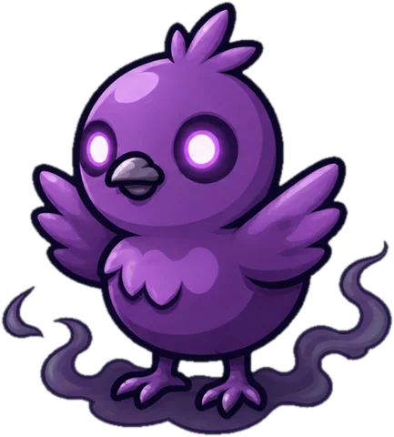

 Wind
WindTap a stage to read its story.
Corvshade begins its life in Ghost Hollow as a small, dull-purple bird-chick with hollow pale eyes and wisps of dark mist coiling from its feet like a tiny ghost. It barely makes any sound - instead it communicates by letting a thin tendril of dark mist drift toward whatever it wants to indicate. Ghost Hollow elders say it was born already knowing the names of the lost - it never had to learn them, they were simply there when it hatched.
Field note: Corvshade's mist-tendril points at whatever it wants to communicate about - it has never been observed using its voice for a request.
Ghost Hollow. Corvshade and its family are found in the Ghost Hollow. See everyone who lives there.
Share a Bond Food that matches its types to become friends. Corvshade loves:
A Bond Food is not a trick. It joins your spirit with the Kimuro's spirit, and only when it chooses you.
Print the Kimuro adventure packs: mazes, cards, a board game and Bond Mark medals.
See the printable packs